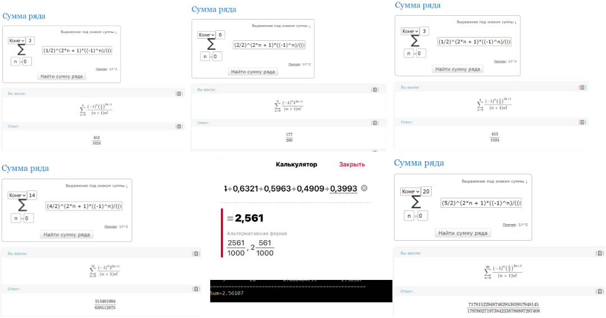

Лаборатна робота № 3
Аналіз достовірності результатів
Розраховуємо окремо внутрішні суми на онлайн калькулятор, підставляючи замість x значення від 1 до 5, задаючи кінцевий К такий самий, як виводить програма до преривання.
Завдання 1:

Переконуємося в тому, що результати нашої програми насправді збігаються.